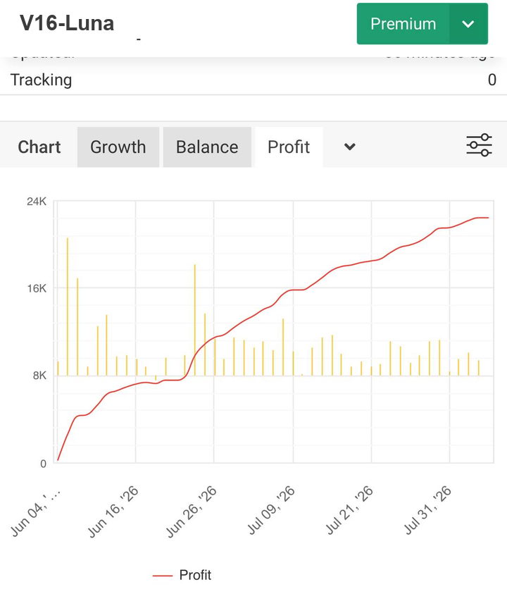
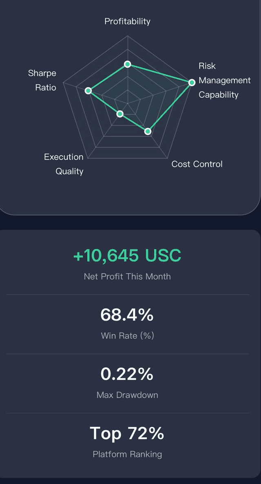
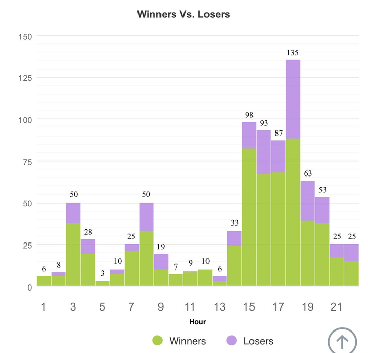

XAUUSD · GRID & HEDGE · MQL5
LATEEA
เวอร์ชัน V16-Luna-1408 — กริดเทรดทอง ควบคุมด้วยมือผ่าน Telegram
EA กริด-เฮดจ์ สำหรับ XAUUSD ที่ให้คนเป็นคนสั่ง: เปิดไม้สวนเทรนด์ทีละขั้น ปิดชดเชยอัตโนมัติเมื่อราคาย่อกลับ สั่งงานทุกอย่างผ่านปุ่มใน Telegram — ตัว EA กันระเบิดให้ ตัวนายถือพวงมาลัย
กลางวัน
กลางคืน
BUILD 1408 · METAEDITOR · MT5
ทุกฟีเจอร์ในหน้านี้ตรงกับโค้ดจริงของเวอร์ชัน V16-Luna-1408 (v16luna-1408.mq5) — ไม่มีตัวเลขสมมุติ
01 — ตัวตน
EA ตัวนี้คืออะไร
LateEA เป็น EA กลยุทธ์กริด-เฮดจ์ สำหรับ XAUUSD บน MetaTrader 5 ทำงานกึ่งอัตโนมัติ: พอราคาวิ่งไปเรื่อย ๆ มันก็เปิดไม้สวนกลับทีละขั้นตามระยะที่ตั้งไว้ แล้วพอราคาย่อกลับมาก็มีระบบปิดชดเชย 3 ชั้น (L1/L2/L3) จัดการให้อัตโนมัติ แถมมีระบบตัดขาดทุนคอยกันพอร์ตระเบิดอีกชั้น
จุดที่ต่างจาก EA กริดตัวอื่น: ทุกการตัดสินใจสำคัญผ่านปุ่มกดใน Telegram — เปิด-ปิด EA, สั่งซื้อขายมือ, ปิดไม้บางส่วน, ตั้งค่าอะไรก็ได้, ดูสถานะพอร์ต ตัวเจ้าของบัญชีเป็นคนสั่ง ตัว EA เป็นคนคิดเลขกับกันระเบิดให้
เรื่องการเพิ่มล็อตของไม้ถัดไปก็มีหลายโหมดให้เลือก จะคูณล็อต (เช่น ×1.5) จะบวกเพิ่มทีละ 0.01 จะบวกทีละ 0.01 ทุก 2 ไม้ จะขึ้นบันไดตามระดับ หรือจะล็อตคงที่ไปเลยก็ได้ — เลือกให้เข้ากับสไตล์ของตัวเอง
โหมดการทำงาน
- AUTO — ระบบบริหารพอร์ตเองตามค่าที่ตั้ง
- SEMI — คนสั่งเปิด/ปิด ระบบจัดการต่อให้
ค่าที่ตั้งได้ทั้งหมด (ค่าคอนฟิก ไม่ใช่ผลลัพธ์เทรดย้อนหลัง)
- ระยะห่างไม้แก้ (Grid)
- ตั้งได้ เป็นจุด
- โหมดการเพิ่มล็อต
- 5 โหมด: คูณ / บวก / บวกทุก 2 ไม้ / ขั้นบันได / คงที่
- ตัวคูณล็อต (โหมดคูณ)
- ×1.5
- ล็อตสูงสุดต่อไม้
- ตั้งได้ — กันพอร์ตระเบิด
- TP ไม้แรก / Hedge TP
- แยกตั้งได้
- ตัดขาดทุน Cut Min / Cut Mult
- จุดตัด + ตัวคูณ
- Dynamic Grid
- เปิด / ปิด
- Trailing
- เปิด / ปิด
- Recovery Auto
- เปิด / ปิด
- กรองข่าว
- เปิด / ปิด — High & Medium impact
- เวลาเปิด-ปิดเทรด
- เวลาไทย HH:MM รองรับข้ามเที่ยงคืน
- ล็อกบัญชี
- ฝังตอนคอมไพล์ — ลูกค้าแก้ไม่ได้
- บอท Telegram
- หลายบอท หนึ่งบอทต่อหนึ่งบัญชีลูกค้า
02 — หน้าจอใน MT5
แดชบอร์ดสุดหรู
แผงเล็ก ๆ ที่มุมชาร์ต — บอกว่า EA เปิดอยู่ไหม ตลาดอนุญาตให้เทรดไหม และพอร์ตยังทนได้อีกกี่จุดก่อนจะถึงเส้นแดง
STELLA PRO
AUTO
EA: ON
MARKETUPTREND
DIRTREND
HOURSOPEN
SPREAD12 OK
DRAW3.2%
DRAG480 pts
BUY3 Pos · 0.09 Lot$12.40
SELL0 Pos · 0.00 Lot$0.00
BALANCE$1,234.56
TODAY / BASKET+$12.34 · -$5.00
MAX DRAG: 480 pts
OPEN | EA ON
ภาพจำลองการแสดงผล — ตัวเลขเป็นค่าตัวอย่าง (DRAG = จำนวนจุดที่พอร์ตทนได้อีกก่อนถึงเกณฑ์ตัดขาดทุน)
03 — กำไรจริง
ผลกำไร EA
นี่คือผลกำไรจริงของ EA โดยตั้งค่าในระดับความเสี่ยงต่ำสุด — เน้นอยู่รอดก่อนกำไร: ล็อตเล็ก ระยะห่างกว้าง เปิดน้อยไม้ ใช้โหมด Dynamic + ดีเลย์ 30 วิ และเปิดกรองข่าวเต็มรูปแบบ
นี่คือผลกำไรจริงของ EA โดยตั้งค่าในระดับความเสี่ยงปกติ — ล็อตเริ่มต้นที่มากขึ้น ลดดีเลย์ โหมด Dynamic ระยะห่างมาตรฐาน เปิดไม้ถี่ขึ้น กำไรโตเร็วขึ้น แต่รับความเสี่ยงมากขึ้น
V16-Luna-1408
Premium
WithdrawalsUSC21,509.00

Profit
Withdrawals USC21,509.00 คือยอดกำไรที่ถอนประมาณในรายเดือน (อาจต่ำกว่าหรือมากกว่า)
Score Overview

Winners vs Losers

ตั้งค่าความเสี่ยงต่ำสุด หมายถึงอะไร?
- ล็อตเล็ก — Start Lot 0.01 โหมด Dynamic (ขั้นบันได) + ดีเลย์ 30 วิ ก่อนไม้ถัดไป
- ระยะห่างกว้าง — Grid เปิดไม้ถี่น้อยลง ลากน้อยลง
- เปิดกรองข่าวเต็มรูปแบบ — หยุดเปิดไม้ช่วง High/Medium impact อัตโนมัติ
- Max Drawdown แค่ 0.22% — จากสถิติจริง เกือบไม่สะเทือนพอร์ต
- กำไรสุทธิยังได้ +10,645 USC/เดือน (Win Rate 68.4%) แม้ตั้งแบบอนุรักษ์นิยมสุด
ตั้งค่าความเสี่ยงปกติ
ล็อตเริ่มต้นที่มากขึ้น ลดดีเลย์ ใช้โหมด Dynamic ระยะห่างมาตรฐาน เปิดไม้ถี่ขึ้น — กำไรโตเร็วขึ้น แต่รับความเสี่ยงมากขึ้น ตัวเลขสถิติที่โชว์เป็นโหมดเสี่ยงต่ำ — โหมดปกติจะกำไรเพิ่มขึ้นตาม lot เริ่มต้นอย่างมาก
ติดต่อขอดู WikiFx
สนใจดูผลจริง / ขอดูบัญชี WikiFx — กดปุ่มแล้วทักมาได้เลย
04 — คันบังคับ
เมนูปุ่มกดใน Telegram
ทุกคำสั่งเป็นปุ่มกด ภาษาไทยอ่านรู้เรื่อง — แยกหมวดตั้งค่า ความปลอดภัย เวลา ใครก็ตั้งบอทของตัวเองได้ (หนึ่งบอทต่อหนึ่งบัญชี) แล้วปลดล็อกด้วย PIN
L
LateEA Botonline
จำลองการทำงานจริงจากโค้ดเวอร์ชัน V16-Luna-1408 — กดปุ่มได้จริง เมนูหมุนเวียนเหมือนบอทตัวจริง
05 — ฟีเจอร์
จุดเด่นของเวอร์ชันนี้
-
01
กรองข่าวที่ทำงานจริง
ดึงปฏิทินข่าว ForexFactory (High/Medium impact) — พอมีข่าวแรง ระบบหยุดเปิดไม้ใหม่ทุกระบบ เก็บแคชไว้ 4 ชั่วโมง พร้อมระบบสำรองเมื่อ API ตอบช้า ปรับปรุงจากเวอร์ชันก่อนที่ระบบนี้พัง
-
02
เวลาเทรดตามเวลาไทย
ตั้งเปิด-ปิดเทรดได้เองผ่าน Telegram ใช้เวลาไทยแท้ (UTC+7) รองรับช่วงข้ามเที่ยงคืน เช่น ตั้ง 22:00–04:00 ได้ แดชบอร์ดขึ้นสถานะ OPEN/CLOSED ให้เห็นทันที
-
03
ล็อกบัญชีตอนคอมไพล์
เบอร์บัญชีที่อนุญาตฝังลงในโค้ดตอนคอมไพล์ — แจกไฟล์ .ex5 ให้ลูกค้า ลูกค้าแก้ไขไม่ได้ เปลี่ยนบัญชีได้เฉพาะเจ้าของโค้ดเท่านั้น
-
04
บอกว่า "ทนได้อีกกี่จุด"
แดชบอร์ดคำนวณ MAX DRAG จาก Equity กับล็อตที่เปิดอยู่ โชว์เป็นจำนวนจุดที่พอร์ตรับไหว ก่อนถึงเกณฑ์ตัดขาดทุน — เห็นแล้วรู้ทันทีว่าควรปิด หรือปล่อยให้ระบบทำงานต่อ
-
05
ระบบกันระเบิดหลายชั้น
DD Lock (หยุดเปิดไม้ใหม่เมื่อพอร์ตติดลบถึงเกณฑ์) ตัดขาดทุนอัตโนมัติ (Cut Min/Cut Mult) Trailing ตามกำไร Recovery อัตโนมัติ ล็อตสูงสุดต่อไม้ — หลายชั้นทำงานซ้อนกัน คนไม่ต้องเฝ้า
-
06
หลายบอท หลายบัญชี
ลูกค้าแต่ละคนสร้างบอทของตัวเอง (BotFather) ใส่ token กับ PIN ของตัวเอง — หนึ่งบัญชีหนึ่งบอท ไม่ปนกัน เปลี่ยนบอทได้โดยไม่ต้องแตะโค้ด
-
07
โหมดล็อตให้เลือก 5 แบบ
เพิ่มล็อตไม้ถัดไปได้หลายวิธี — คูณ (×1.5), บวกทีละ 0.01, บวก 0.01 ทุก 2 ไม้, ขั้นบันได Dynamic, หรือล็อตคงที่ เปลี่ยนได้ผ่าน Telegram กลางเทรดได้เลย รับความเสี่ยงได้น้อยหรือมากก็เลือกได้
06 — วิธีติดตั้ง
เริ่มใช้งาน ใน 4 ขั้นตอน
ตั้งแต่สร้างบอท ไปจนถึงเปิดใช้ EA — ทำตามลำดับนี้เลย
-
1
สร้างบอท Telegram ผ่าน @BotFather
ใน Telegram ค้นหา @BotFather กดเริ่มสนทนา แล้วพิมพ์คำสั่ง
/newbotBotFather จะถามชื่อบอท (โชว์ให้คนเห็น เช่น LateEA) และชื่อผู้ใช้ (ต้องลงท้ายด้วย bot เช่น LateEA_bot)
เสร็จแล้วจะได้โทเคน (Token) ประมาณนี้:
8123456789:AAH...⚠️ โทเคนคือกุญแจล็อกบอท — เก็บไว้เป็นความลับ อย่าแชร์ให้ใคร
-
2
ติดตั้ง EA ลง MetaTrader 5
ปิด MT5 ก่อน แล้วคัดลอกไฟล์ v16luna-1408.ex5 (หรือ Backtest_v16luna-1408.ex5 สำหรับ Strategy Tester) ไปที่โฟลเดอร์ Data ของ MT5
File → Open Data Folder → MQL5 → Expertsเปิด MT5 กลับมา ลาก EA ลงบนชาร์ต XAUUSD ตั้งค่า: ใส่โทเคนบอท (จากขั้นตอน 1), ใส่PIN ที่ตั้งเอง (ใช้ปลดล็อกคำสั่ง), ติ๊ก Allow Algo Trading แล้วกด OK
-
3
เพิ่ม API ให้ WebRequest (สำคัญมาก!)
⚠️ สำคัญมาก! หากไม่ทำขั้นตอนนี้ บอทจะโหลดข่าวไม่ได้ และขึ้น Error:
คุณต้องไปที่ MT5 ของพอร์ตที่จะรันบอท ไปที่เมนู Tools → Options → Expert Advisorsติ๊กถูกที่ช่อง "Allow WebRequest for listed URL:" แล้วกดปุ่ม + สีเขียว พิมพ์เพิ่มเข้าไป 3 บรรทัด:
http://nfs.faireconomy.mediahttps://nfs.faireconomy.mediahttps://api.telegram.orghttp://nfs.faireconomy.media (ไม่ใช่ https) สำหรับดึงปฏิทินข่าว, https://api.telegram.org สำหรับรับ-ส่งข้อความกับบอท
-
4
ตรวจสอบว่าทำงาน
เปิด Journal (แท็บ Experts) ดูข้อความ — ถ้าทุกอย่างเรียบร้อย จะเห็นบอทส่งข้อความต้อนรับมาใน Telegram
แล้วพิมพ์ /menu ในแชทบอท — ปุ่มเมนูหลักต้องขึ้นตามนี้ ถึงจะเริ่มตั้งค่าใช้งานได้
ยังไม่ขึ้นเมนู? ตรวจ 3 อย่าง: 1) โทเคนใส่ถูกไหม 2) WebRequest ทั้ง 3 บรรทัดเพิ่มครบไหม 3) Allow Algo Trading เปิดไหม
07 — เวอร์ชัน
V16-Luna-1408 เปลี่ยนอะไรบ้าง
อัปเดตต่อจาก v0508Deep — แก้บัคที่กระทบเงิน/พฤติกรรมจริง 10+ จุด พร้อมฟีเจอร์ใหม่ให้เลือกกรองข่าวเองได้
- แก้ Hedge TP (Fixed/Dynamic/Trailing) ตายสนิท — เดิมวนหาตำแหน่ง comment ผิด ไม่เคยทำงาน เปลี่ยนมาใช้ฟังก์ชันรวบรวมไม้ทั้งหมด 3 โหมดใช้ได้จริงแล้ว
- แก้ ค่าที่ตั้งผ่าน Telegram ไม่จำ (หายเมื่อรีสตาร์ท) — hedge L1/L2/L3, กรองกระชาก (/filter), ระดับข่าวที่กรอง เก็บลงไฟล์สถานะครบแล้ว
- แก้ ตาราง /calclot กับพฤติกรรมจริงไม่ตรงกัน (โหมดคูณ ×1.5) — ปรับเป็น chain เดียวกับที่ EA คำนวณจริง ไม้ที่ 3 = 0.03 ไม่ใช่ 0.02
- แก้ ปุ่มเมนูตายใน Backtest build — เพิ่ม handler /lock /menu_pairclose /pairclose /ea /filter ให้ครบ
- แก้ ระบบ "Anti-Hedge Domination" (บังคับเปิดไม้สวน) ไม่เคยทำงาน — นับ hedge แบบขั้นบันได (H1_/H2_/H3_) ได้แล้ว
- แก้ input TieredHedgeL1/L2/L3 (20/15/10) ไม่ถูกใช้เลย — ระบบใช้ค่าฮาร์ดโค้ด 35/28/21 — ต่อสาย input เข้าสู่ runtime แล้ว
- แก้ โหมด Hedge Lot คงที่ อันตราย — เดิม NormalizeLot โดนเพดานจนทุกชั้นกลายเป็น Max Lot (0.40) — ตอนนี้ 20/15/10% = 0.20/0.15/0.10 ตามที่ตั้ง
- ใหม่ Hedge ปิดโดยค่าเริ่มต้น — เปิดไม้หลักล้วนๆ ไม่มีไม้สวนมาประกบ + ตั้งเกตล็อตขั้นต่ำที่ hedge จะเริ่มทำงานได้เอง (/hedgeminlot ค่าเริ่มต้น 0.12, 0 = เริ่มทันที)
- แก้ เปิดจำกัดเวลา /hours on แล้วปิดเทรดเงียบๆ ทั้งวัน — ถ้ายังไม่ตั้งเวลาจะตั้งเริ่มต้น 08:00–22:00 ให้อัตโนมัติ
- แก้ /newsfilter เปรียบเทียบตัวพิมพ์ใหญ่-เล็กผิด — ปรับเป็น case-insensitive
- แก้ แดชบอร์ดอัปเดตทุก tick เปลือง CPU — ย้ายไปอัปเดตผ่าน Timer
- แก้ ไฟล์สถานะใช้ FILE_COMMON แชร์กันทั้งเครื่อง หลายบัญชีชนกัน — แยกตามเลขบัญชี + อ่านไฟล์เก่า migrate ให้อัตโนมัติ
- ใหม่ เลือกระดับข่าวที่กรองได้ (/newsimpact) — High เท่านั้น หรือ High + Medium ตามใจ
- ใหม่ กรองข่าวรองรับ Medium — เดิมกรองได้เฉพาะ High แต่เว็บโฆษณาไว้ว่ารวม Medium
- ใหม่ แปลงเวลาข่าวเป็น UTC แบบไม่พึ่ง timezone ของ terminal — กรองตรงชั่วโมงจริงทุกเครื่อง ตั้งเวลากี่โซนก็ไม่เพี้ยน
- ใหม่ จำกัด Dynamic Hedge TP ไม่ให้ไกลเกินจริง (clamp 600 จุด)
- ใหม่ Hedge ผ่านตัวกรองเดียวกับไม้หลัก — ไม่เปิดช่วงข่าว/นอกเวลาซื้อขาย/สเปรดสูง/DD lock
- ใหม่ ลบ dead code (CheckDrawdownLockReset, CountHedgePositions) — โค้ดสะอาด คอมไพล์ 0 error 0 warning
- ใหม่ ตั้งจุดกระชากเองได้ (/filtercrash) — กรองราคาวิ่งแรงกี่จุดก็ตั้งผ่าน Telegram ได้ จำข้าม restart
- ใหม่ ตาราง Lot กำหนดจำนวนไม้เองได้ (/calclot 50) — สูงสุด 100 ไม้ เกินกำหนดระบบแจ้งเตือน
- ใหม่ รวมปุ่ม ซื้อ/ขาย/ปิดทั้งหมด/ปิดชดเชย เป็นเมนูเดียว "เปิด-ปิดไม้พื้นฐาน" — เมนูหลักสั้นลง เข้าถึงเร็วขึ้น
- ใหม่ Pair Close เริ่มที่ 7 ไม้ (ค่าเริ่มต้น) — ปิดชดเชยถี่ขึ้น แบกไม้ติดลบน้อยลง
08 — คำถามที่พบบ่อย
ทำไมเปิดไม้แล้วมี sell มาด้วย?
คำถามที่เจอบ่อยที่สุด — รวมคำตอบเรื่องระบบ Hedge และวิธีปิด/ตั้งเกตให้ตรงกับสไตล์ตัวเอง
ทำไมเปิดไม้แรกแล้วมี sell มาด้วยพร้อมกัน?
ไม่ใช่ระบบขายขาดทุน (Sell Stop) — คือระบบ Hedge (Tiered Ping-Pong) ที่ EA เปิดไม้ฝั่งตรงข้ามประกบไม้หลักอัตโนมัติ เพื่อกันความเสี่ยงตอนราคาวิ่งไปทางเดียว และเก็บกำไรตอนราคาย่อกลับ
เวอร์ชันใหม่ปิดระบบนี้เป็นค่าเริ่มต้นแล้ว — ถ้าปิดอยู่ เปิดไม้ 0.01 buy จะมีแค่ buy ไม่มี sell มาแทรก ถ้าเห็น buy/sell พร้อมกัน แปลว่าเปิด Hedge อยู่
จะปิดระบบ Hedge ยังไง?
พิมพ์ /menu_hedge_cat ใน Telegram แล้วกดปุ่ม ระบบ Hedge สลับเป็นปิด — เวอร์ชันใหม่ค่าเริ่มต้นปิดอยู่แล้ว ไม่ต้องแตะอะไรถ้าไม่อยากใช้
อยากให้ Hedge เริ่มเฉพาะเมื่อไม้หลักถึงล็อตที่กำหนด (เช่น 0.12) ได้ไหม?
ได้ — พิมพ์ /hedgeminlot 0.12 ไม้หลักยังไม่ถึง 0.12 ล็อต → ยังไม่เปิด hedge เลย ใส่ 0 = เริ่มทันที ตั้งแล้วจำข้าม restart
ควรฝากเงินเท่าไหร่ถึงจะเริ่มใช้ได้?
เริ่มต้นเท่าไหร่ก็ได้ — แต่ยิ่งมีเงินทุนเยอะ ความเสี่ยงยิ่งน้อย แนะนำ500 ดอลลาร์ขึ้นไป
เพราะพอร์ตยิ่งมีเงินเยอะ ระบบยิ่งมีระยะทนลาก (MAX DRAG) มาก ไม้ที่เปิดไปยิ่งมีพื้นที่ให้ราคาย่อกลับก่อนถึงจุดตัดขาดทุน โอกาสโดน margin call ก็ยิ่งน้อยลง
เริ่มต้นแนะนำไม้แรก 0.01 โหมดล็อตเล็ก แล้วค่อยปรับตามผลเทสต์บนบัญชีเดโม่ก่อนใช้เงินจริง
| เงินทุน | ล็อตเริ่มต้นที่แนะนำ | สไตล์ |
|---|---|---|
| 500$ ขึ้นไป | 0.01 | ปลอดภัยสุด |
| 1,000$ | 0.02 | ปลอดภัย |
| 2,000$ | 0.03 – 0.05 | สมดุล |
| 5,000$ ขึ้นไป | 0.05 – 0.07 | โตไว รับเสี่ยงได้ |
ล็อตเริ่มต้นสูงสุดที่ EA รองรับคือ 0.07 — เริ่มน้อยไว้ก่อน แล้วค่อยเพิ่มเมื่อชินกับระบบ
พิมพ์ PIN แล้วเมนูไม่ขึ้น (บอทไม่ตอบ) ต้องตรวจอะไรบ้าง?
ไล่ตรวจ 3 อย่างตามลำดับ — ส่วนใหญ่ติดข้อ 1 หรือ 2:
1. โทเคนบอทถูกไหม? — ตรวจช่อง TelegramBotToken ใน EA Properties → Inputs ต้องเป็นโทเคนเต็มจาก @BotFather (รูปแบบ 123456789:AA...)
2. Allow WebRequest ครบไหม? — Tools → Options → Expert Advisors → ติ๊ก Allow WebRequest for listed URL แล้วเพิ่ม https://api.telegram.org กับ https://nfs.faireconomy.media ให้ครบ 3 บรรทัด (รวม http://nfs.faireconomy.media)
3. Allow Algo Trading เปิดไหม? — ปุ่มบน toolbar ต้องเป็นสีเขียว + ติ๊ก Allow Algo Trading ตอนลาก EA ลงชาร์ต
ตรวจครบแล้วเปิดแท็บ Experts ใน MT5 — ควรเห็นบรรทัดตรวจสอบ Telegram ตอน EA เริ่มทำงาน ถ้ายังเงียบแปลว่าข้อความยังไม่ออกจากเครื่อง ตั้ง PIN ใหม่แล้วพิมพ์ /pin <รหัส> ในแชทบอท 1 ครั้งก่อน
เจอ Error 4014 (WebRequest) ต้องทำยังไง?
Error 4014 = MT5 บล็อกคำขอ WebRequest เพราะ URL ยังไม่ถูกเพิ่มในรายการอนุญาต — วิธีแก้:
เปิดเมนู Tools → Options → Expert Advisors → ติ๊ก Allow WebRequest for listed URL → กดปุ่ม + สีเขียว แล้วเพิ่มให้ครบ 3 บรรทัด:
https://api.telegram.org — รับ/ส่งข้อความกับบอท
https://nfs.faireconomy.media — ปฏิทินข่าว
http://nfs.faireconomy.media — ปฏิทินข่าว (http)
กด OK แล้วลาก EA ลงชาร์ตใหม่ (หรือปิด-เปิดชาร์ต) — Error 4014 ควรหายทันที ถ้ายังขึ้นอยู่ แปลว่าพิมพ์ URL ผิดตัว/ผิดบรรทัด
ใช้บอทเดียวกับหลายบัญชีได้ไหม?
ไม่ได้ — ระบบออกแบบมาให้หนึ่งบอทต่อหนึ่งบัญชี (หนึ่งโทเคนต่อหนึ่งลูกค้า) เพราะบอทผูกกับเลขบัญชีที่ล็อกในไฟล์ EA (ฝังตอนคอมไพล์) ถ้าเอาโทเคนเดียวกันไปใส่หลายเครื่อง/หลายบัญชี จะสั่งงานสลับกัน ข้อความข้ามกันจนควบคุมไม่ได้
ถ้ามีหลายบัญชี (เช่น เดโม่ + บัญชีจริง) ให้สร้างบอทใหม่ผ่าน @BotFather แล้วใช้โทเคนแยกกัน — ไฟล์สถานะของ EA แยกตามเลขบัญชีอยู่แล้ว ไม่ชนกัน
✅ Checklist ตั้งค่าเริ่มต้นก่อนใช้งาน
- โทเคนบอท — ใส่
TelegramBotTokenเต็มจาก @BotFather - PIN — ตั้ง
TelegramPinเองใน Inputs - Allow WebRequest — ติ๊ก + เพิ่ม 3 URL (ดูข้อ 4014)
- Allow Algo Trading — ปุ่มสีเขียว + ติ๊กตอนลาก EA ลงชาร์ต
09 — ดาวน์โหลด EA
ดาวน์โหลด V16-Luna-1408
ไฟล์ EA พร้อมใช้ — ล็อกเลขบัญชีของคุณในตัวไฟล์แล้ว พร้อมระบบยืนยันก่อนโหลดเพื่อความปลอดภัย
v16luna-1408.ex5
ล่าสุด
- ✅ EA หลักสำหรับรันจริง (live/demo) — กริด/เฮดจ์ XAUUSD สั่งงานผ่าน Telegram
- ✅ ไฟล์ Backtest_v16luna-1408.ex5 แถมในโฟลเดอร์เดียวกัน สำหรับทดสอบใน Strategy Tester
- ✅ ล็อกเลขบัญชีของคุณในตัวไฟล์แล้ว — บัญชีอื่นเปิดไม่ได้
- ✅ วิธีติดตั้งครบอยู่ในหน้า วิธีติดตั้ง ด้านบน
กดปุ่ม แล้วกรอกเลขบัญชี MetaTrader ของคุณเพื่อยืนยัน — ระบบกันคนที่ไม่ใช่ลูกค้า
10 — ก่อนใช้
คำเตือนความเสี่ยง
การเทรด XAUUSD มีความเสี่ยงสูง อาจสูญเสียเงินต้นทั้งหมดได้ EA ตัวนี้เป็นเครื่องมือช่วยบริหารพอร์ต ไม่ใช่เครื่องพิมพ์เงิน ไม่มีการันตีกำไรใดๆ
ควรเทสต์บนบัญชีเดโม่ก่อนใช้จริง ใช้เงินที่ยอมรับการสูญเสียได้เท่านั้น กลยุทธ์กริด-เฮดจ์มีพฤติกรรมเฉพาะตัว — ต้องเข้าใจระบบตัดขาดทุนของ EA ให้ครบก่อนเปิดใช้
มีคำถามเรื่องการใช้งาน หรืออยากได้เวอร์ชันปรับแต่งพิเศษ หรือขอดู WikiFx — ทักมาคุยได้ที่ guns.lol/lostsky777